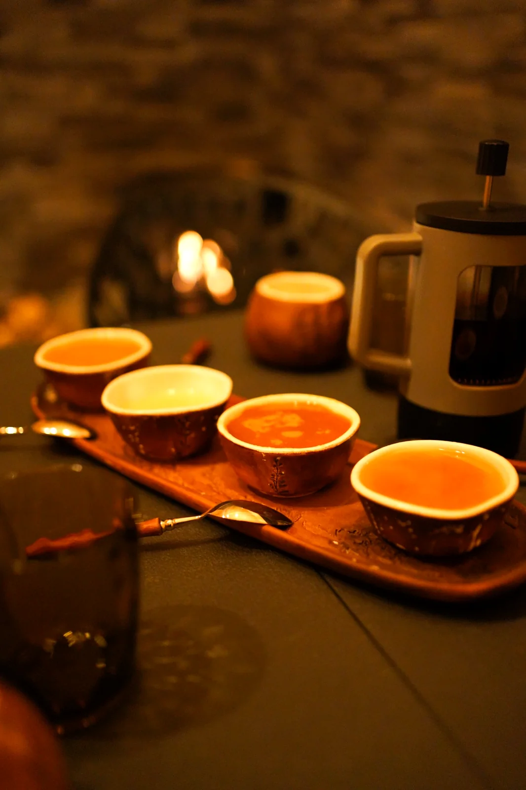

БАНЯ ПРЕДКОВ
БАНЯ ПРЕДКОВ
О ФОРМАТЕ
Что такое индивидуальное парение и чем оно отличается от аренды бани
Почему здесь важны не часы аренды, а работа мастера, этапы и внимание к гостю.
Читать статьюЖУРНАЛ ИСТОТИ
Технология мягкого парения, кленовые веники, купели, подготовка к визиту и сравнение программ. Только реальные особенности пространства.
Почему здесь важны не часы аренды, а работа мастера, этапы и внимание к гостю.
Читать статью
Зачем чередовать тепло, охлаждение и отдых, и как выбирают интенсивность процесса.
Читать статью
Короткий практический гид: что брать с собой, как устроено посещение и чего ожидать.
Читать статью
Выбор веника и принципы бережной работы мастера.
Читать статью ↗
Две тёплые и одна холодная купель: как устроена последовательность.
Читать статью ↗Разница между групповым форматом, «Погружением» и флагманом.
Читать статью ↗Технология парной · Подход мастера · Клуб банных пап (в разработке)